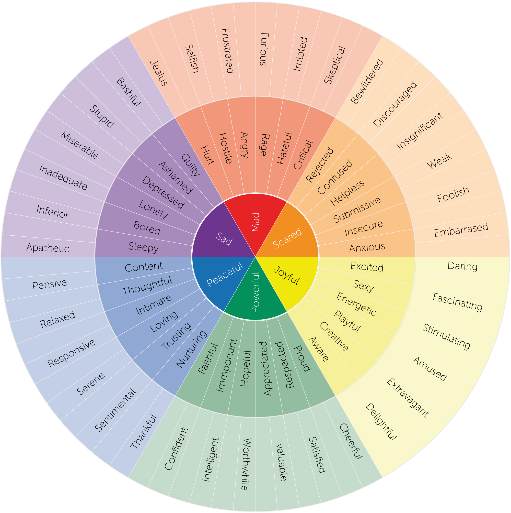

Plan zajęć
- 15h ćwiczeń
- Poniedziałki 9:30-12:30
Nieobecności
- Obecność na wszystkich laboratoriach jest
obowiązkowa
- Starajcie się chodzić na zajęcia swojej przypisanej
grupy
- …ale w ramach odrobienia nieobecności można przyjść
na zajęcia innej grupy (po wcześniejszym ustaleniu z prowadzącym)
Zaliczenie laboratoriów
- Proste zaliczenie w formie pisemnej (na ostatnich
zajęciach)
- Do zdobycia 10 punktów
Kilka uwag
- Proszę, żeby na zajęciach nie używać elektroniki -
wszystkie materiały będziecie mieli udostępnione
- Będziemy eksplorować swój świat wewnętrzny, w
związku z czym
- gorąco zachęcam do bycia tu i teraz i zaangażowania
się w ćwiczenia - dzięki temu będziecie w stanie głębiej zrozumieć
koncepty prezentowane na zajęciach
- zabronione jest wszelkiego rodzaju krytykowanie
oraz komentowanie emocji, którymi dzielą się inni studenci
- bądźmy dla siebie bezpieczni i wyrozumiali
- na tym przedmiocie zajmujemy się obserwacją, NIE
oceną ani diagnozą
Zadanie 1
- Pomyślcie przez chwilę o sytuacji z ostatnich kilku
dni, która wywołała u was wyraźną reakcję emocjonalną
- Nie musi być bardzo osobista
- Nie musicie jej nikomu opowiadać
- Nie wybierajcie sytuacji bardzo ciężkich i/lub
trudnych - wybierzcie coś, z czym będzie wam komfortowo pracować podczas
tych warsztatów
- Jaką emocję wtedy czuliście?
- Zapiszcie to na kartce
- Skąd to wiecie?
- Zapiszcie odpowiedź na kartce
Co pomaga nam “odczytać” odczuwane przez nas emocje?
- Sytuacja - co się wydarzyło?
- Ocena - co to dla mnie oznacza?
- Fizjologia - co dzieje się w ciele?
- Myśli - jakie pojawiają się myśli?
- Doświadczenie - co w przeszłości czuł_m w podobnych
sytuacjach?
- Tendencja do działania - co mam ochotę teraz
zrobić?
- Wiedza na temat emocji - co statystycznie człowiek
może czuć w tej sytuacji?
Zadanie 2
- Podzielcie się dowolnie na pary / trójki i
usiądźcie obok siebie
- Każdy osobno przypomina sobie sytuację z początku
zajęć
- Zamknijcie oczy i spróbujcie myślami “przenieść
się” do tamtej chwili - wyobrazić sobie, że ta sytuacja dzieje się
teraz
- Przejdźcie uwagą przez głowę, szczękę, szyję,
klatkę piersiową, brzuch, ręce, nogi
- Spróbujcie ocenić, czy czujecie coś w ciele:
- zmianę temperatury
- ucisk lub rozluźnienie
- ból lub dyskomfort
- Czy oddech się zmienił?
- Czy mam ochotę coś zrobić, jakoś się ruszyć?
- Czy serce bije inaczej?
- Otwórzcie oczy
- Zapiszcie na kartce, co zauważyliście w ciele, bez
używania nazw emocji
Przedyskutujcie
doświadczenie w swoich grupach, zastanawiając się, jakie emocje mogą być
zgodne z profilem opisanym przez was na kartce
Czy jedna konfiguracja sygnałów fizjologicznych zawsze wskazuje na
konkretny stan emocjonalny?
Pułapka
“Jeśli czuję w ciele X, to znaczy że odczuwam emocję Y.”
- Czy łatwo było znaleźć sygnały? Co przeszkadzało w
ich odczuwaniu?
- Czy wszyscy zauważyli coś w ciele? Czy ktoś
doświadczył trudności w odczuwaniu sygnałów z ciała?
- Czy sygnały były jednoznaczne?
- Czy sygnały pozwoliły Wam nazwać emocję, czy tylko
zauważyć, że “coś się dzieje”?
Interocepcja, świadomość interoceptywna
- Umiejętność odczytywania i odczuwania sygnałów
wysyłanych z wewnątrz ciała - głód, temperatura, ból, tętno, oddech
itp.
Zadanie 3
- Wracamy myślami do tej samej sytuacji
- Wychodzimy z ciała, wchodzimy do myśli
Zastanów się
- Co dokładnie się wydarzyło? Suche fakty
- Co pomyślał_m? Jakie pojawiły się myśli?
- Co ta sytuacja dla mnie oznaczała? Jakie nadał_m
jej znaczenie?
- Czego się spodziewał_m?
- Co w tej sytuacji było dla mnie zagrożone? Co w tej
sytuacji było dla mnie ważne?
- Jaką emocję najlepiej opisuje ten zestaw
odpowiedzi?
Appraisal
- Student otrzymuje komunikat: “prowadzący chce ze
mną porozmawiać”
- Student A -> “pewnie coś zrobiłem źle” ->
lęk
- Student B -> “może chce mnie pochwalić” ->
ciekawość/radość
- Student C -> “ugh, śpieszę się na tramwaj!”
-> irytacja/zniecierpliwienie
UWAGA: nie oceniamy, który ze studentów ma “właściwe/zdrowe/dobre”
myśli. Na tym przedmiocie zajmujemy się obserwacją.
Zadanie 4
Gdybym nie musiał_ się kontrolować, co zrobił_bym w tej sytuacji? Co
mam ochotę zrobić?
Przykłady: * rozpłakać się * przytulić kogoś * krzyczeć * zaatakować
* śmiać się * zatrzymać się * zbliżyć się * uciekać
Przykładowe interpretacje
| Mam ochotę… |
Możliwa emocja |
Co jeszcze mogłoby to oznaczać? |
| uciec |
lęk |
wstyd, przeciążenie |
| zaatakować |
złość |
frustracja, zagrożenie |
| wycofać się |
smutek |
wstyd, lęk |
| podejść |
zainteresowanie |
radość, ciekawość |
Pytanie
Czy tendencja do działania jest tym samym co zachowanie?
Zadanie 5
Które z ćwiczeń dało wam najwięcej informacji o emocjach?
Przedyskutujcie w grupie, każdy może mieć inne odczucia!
- Czy któraś z dzisiejszych technik była waszym
zdaniem “lepsza” niż inna?
- Czy uważacie, że należałoby używać do identyfikacji
emocji jednej techniki, czy wszystkich razem?
- A może uważacie jeszcze coś innego?
Granularność emocjonalna (Lisa Feldman Barrett)

Colored Feeling Wheel by Feeling Wheel is licensed under a
Creative Commons Attribution-ShareAlike 4.0 International License.
Granularność emocjonalna - dlaczego to ważne?
- Im precyzyjniej zidentyfikujemy odczuwaną emocję,
tym precyzyjniejsze możemy zastosować techniki regulacji
- Rozumienie tego, co dzieje się w naszym świecie
wewnętrznym zmniejsza ryzyko angażowania się w niezdrowe sposoby
regulacji emocji (alkohol, używki, kompulsywne jedzenie)
Erbas, Y., Gendron, M., & Fugate, J. M. B. (2022).
Editorial: The role of emotional granularity in emotional regulation,
mental disorders, and well-being. Frontiers in psychology, 13, 1080713.
https://doi.org/10.3389/fpsyg.2022.1080713
Zadanie 6
- Do emocji napisanej na samym początku zajęć na
kartce, znajdź trzy bardziej precyzyjne alternatywy
- Co zmienia się, kiedy zamiast “czuję się źle”
potrafię powiedzieć np. “jestem zawiedziona i rozczarowana”?
Zadanie 7 - c. d. na wykładzie
- Czy można czuć wszystkie te emocje
jednocześnie?
- Czy emocje odczuwane jednocześnie muszą wszystkie
mieć ten sam charakter?
Na zakończenie
Co sprawia, że mamy czasem wrażenie, że powinniśmy czuć tylko jedną
emocję?